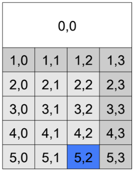
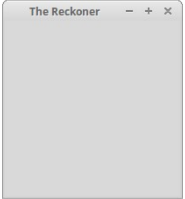
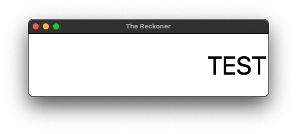

Creating the GUI
Overview
To create the GUI, we’ll use Tkinter’s grid manager. The grid manager allows the placement of widgets using a row/column approach. More specifically, we will layout the grid as follows:
The display will be located at row 0, column 0, and span four columns.
The top row of buttons (
(,),AC, and**) will be located at row 1, columns 0 through 3.The remaining buttons will be placed in increasing rows, at columns 0 through 3.
Below, you’ll find a picture of the calculator layout with row and column numbers:

A Template to Start
Let’s first work on a template for The Reckoner. Be sure to fill in the name, date and description fields.
#################################################################
# Name:
# Date:
# Description
#################################################################
from tkinter import *
# the main GUI
class MainGUI(Frame):
def __init__(self, parent):
"""Constructor for MainGUI"""
def setupGUI(self):
"""Sets up the Graphical User Interface"""
##############################
# the main part of the program
##############################
# create the window
# set the window title
# generate the GUI
# display the GUI and wait for user interaction
Note how this simply sets up a shell that we can work with. Of course, a header will be included at the top.
Since we will make use of the Tkinter library, it will have to be imported. We use the general * to unpack tkinter with from tkinter import * here since we do not plan on having conflicts with other libraries.
Next, we’ll specify the class that will represent The Reckoner’s main GUI (named MainGUI in the code above). This class will be a Tkinter Frame; therefore, it will inherit from Tkinter’s Frame class.
After the class, we’ll include the main part of the program. It creates the window, sets its title, creates an instance of the MainGUI class (thereby generating the calculator GUI), and finally displays the GUI and waits for user interaction.
The main Section
Now we provide details for the main part of the program. The main portion of the code should do the following:
Create a window with
Tk()Add a title to the window (such as “The Reckoner”)
Instantiate a
MainGUIobjectRun the
mainloop()for the window.
At this point, you should be able to run the program. It currently doesn’t do very much; however, a small window with the title “The Reckoner” should appear. A photo of the blank window follows to show something similar to what you may see.

Show Solution
##############################
# the main part of the program
##############################
# create the window
window = Tk()
# set the window title
window.title("The Reckoner")
# generate the GUI
p = MainGUI(window)
# display the GUI and wait for user interaction
window.mainloop()The MainGUI Constructor
We continue by specifying the constructor of the MainGUI class. For now we simply want the constructor to do the following:
Call on the constructor of the parent class
Frame, passing in the window, and specifying the background color of theFrame.Call on the
setupGUI()method.Manage the geometry for this class using
self.pack()
Show Solution
class MainGUI(Frame):
def __init__(self, parent):
"""Constructor for MainGUI"""
Frame.__init__(self, parent, bg="white")
self.setupGUI()
# Geometry Management for the Frame
self.pack(fill=BOTH, expand=1)
def setupGUI(self):
"""Sets up the Graphical User Interface"""
The setupGUI Method
Now, let’s implement the setupGUI method. This will be done in smaller chunks as it is a larger function. The display will be implemented as a Tkinter Label objects, and the buttons will each be implemented as a Tkinter Button objects. To make the interface nifty, each button will be represented with an image (GIF) that has already been designed and properly sized.
The Display
Here are some goals for the first iteration of the setupGUI method that sets up the display.
Create a
Labelobject to represent thedisplaywith the following customizations:set the default
textto be an empty stringright-align the text by
anchor-ing it in the eastset the back ground to be white.
set the
heightto 2set the
widthto 15set the
fontto “TexGyreAdventor” (or another choice) and at size 50
Manage the geometry of the
displayusinggridwith these customizationsset the
rowto the top row using 0set the
columnto the left-most column using 0set a
columnspanof 4 to go across all the columnsexpand it to all 4 sides (
NSEW) with thestickyattribute
Show Solution
def setupGUI(self):
"""Sets up the Graphical User Interface"""
# The Display
self.display = Label(
self, # The MainGUI object is passed in as the parent
text="",
anchor=E, # Right-align text in the display;
bg="white", # White Background
fg="black", # Black Text
height=2, # Set the height to 2 characters
width=15,
font=("TexGyreAdventor", 50) # Font is TexGyreAdventor at 50 point size
)
# Geometry Management for the Display
self.display.grid(
row=0, # Place it in the top row
column=0,
columnspan=4, # Spanning across all four columns
sticky=E+W+N+S # Expand it on all four sides
)Note that Tkinter’s Label class can be instantiated with many configuration parameters. In the case of the calculator’s display, we set its text to nothing (i.e., “”); right-align the text with anchor=E; set its background to white; set its height to 2 characters high; set its width to 15 characters wide; and set its font to 50 point TexGyreAdventor. We then lay the display on a grid at row 0, column 0, spanning four columns, and expanding it on all sides (using the sticky configuration option). Finally, the GUI is packed such that the display fills the entire window space both horizontally and vertically.
Testing the Display
For the sake of a test, briefly modify the text inside the Label for display to hold something (like the word “TEST”). Then, running the updated program to see a window with the calculator’s display shown with the word “TEST” inside of it.

Lists of Dictionaries
Instead of having an identifier for each button, we can simply place the dictionaries inside a list and then loop over that list to create a button for each item in the list. Try to do just that before looking at the code that follows.
Show Solution
def setupGUI(self):
# code above this button layout comment has been excluded
# the button layout
# ( ) AC **
# 7 8 9 /
# 4 5 6 *
# 1 2 3 -
# 0 . = +
buttons = [
# Left Paren
{"text":"(", "bg_color": "gray", "row": 1, "column": 0},
# Right Paren
{"text":")", "bg_color": "gray", "row": 1, "column": 1}
]
# Create the buttons
for button in buttons:
self.make_button(button)